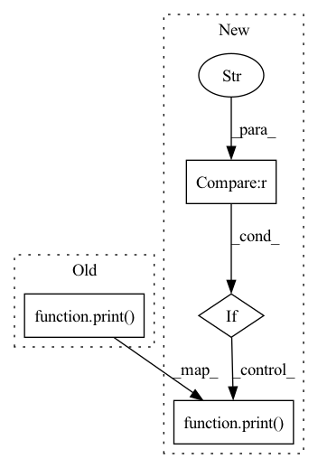

Pattern ID :1529

Before Change
elif activation == "leaky":
self.conv.append(nn.LeakyReLU(0.1, inplace=True))
else:
print("activate error !!! {} {} {}".format(sys._getframe().f_code.co_filename,
sys._getframe().f_code.co_name, sys._getframe().f_lineno))
def forward(self, x):
for l in self.conv:
x = l(x)
After Change
self.conv.append(nn.ReLU(inplace=True))
elif activation == "leaky":
self.conv.append(nn.LeakyReLU(0.1, inplace=True))
elif activation == "linear":
pass
else:
print("activate error !!! {} {} {}".format(sys._getframe().f_code.co_filename,
sys._getframe().f_code.co_name, sys._getframe().f_lineno))
def forward(self, x):
for l in self.conv:
x = l(x)
In pattern: SUPERPATTERN
Frequency: 5
Non-data size: 4
Instances
Fragment ID: 4145275
Project Name: tianxiaomo/pytorch-yolov4
Commit Name: 90e0325d1ebd39c141b989e09a2a4a6b44781289
Time: 2020-05-13
Author: 1025568329@qq.com
File Name: models.py
M Class Name: Conv_Bn_Activation
N Class Name: Conv_Bn_Activation
M Method Name: __init__(8)
N Method Name: __init__(8)
M Parent Class: nn.Module
N Parent Class: nn.Module
M File Name: models.py
N File Name: models.py
M Start Line: 55
M End Line: 56
N Start Line: 54
N End Line: 58
Fragment ID: 4145274
Project Name: tencentyouturesearch/personreid-cacenet
Commit Name: a82d51979279b93a4f34eff01d16de2af6f02b4d
Time: 2020-08-13
Author: fufuyu@tencent.com
File Name: models/baseline.py
M Class Name: Baseline
N Class Name: Baseline
M Method Name: __init__(9)
N Method Name: __init__(8)
M Parent Class: nn.Module
N Parent Class: nn.Module
M File Name: models/baseline.py
N File Name: models/baseline.py
M Start Line: 26
M End Line: 70
N Start Line: 15
N End Line: 65
Fragment ID: 4145272
Project Name: tianxiaomo/pytorch-yolov4
Commit Name: cf7d98a55dbc4083909789d30a0fb1db04d9f0c5
Time: 2020-05-13
Author: 1025568329@qq.com
File Name: models.py
M Class Name: Conv_Bn_Activation
N Class Name: Conv_Bn_Activation
M Method Name: __init__(8)
N Method Name: __init__(8)
M Parent Class: nn.Module
N Parent Class: nn.Module
M File Name: models.py
N File Name: models.py
M Start Line: 55
M End Line: 56
N Start Line: 50
N End Line: 54
Fragment ID: 4145271
Project Name: yuangongnd/ast
Commit Name: 481cd0acb38e73bef9ba24b5d0e5d8bf9e5ccf93
Time: 2021-07-20
Author: yuangongfdu@gmail.com
File Name: src/models/ast_models.py
M Class Name: ASTModel
N Class Name: ASTModel
M Method Name: __init__(10)
N Method Name: __init__(9)
M Parent Class: nn.Module
N Parent Class: nn.Module
M File Name: src/models/ast_models.py
N File Name: src/models/ast_models.py
M Start Line: 50
M End Line: 133
N Start Line: 47
N End Line: 141